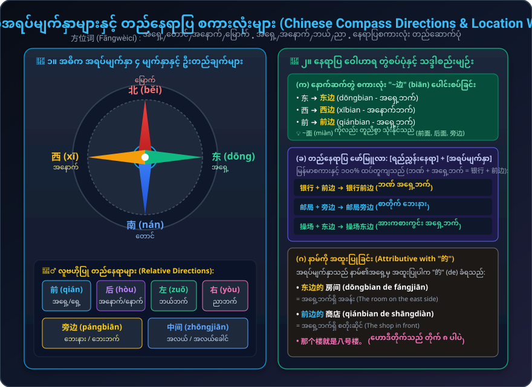

အရပ်မျက်နှာများနှင့် တည်နေရာပြ စကားလုံးများ (方位词: 东, 南, 西, 北, 前, 旁)၊ အကွာအဝေးပြ ဝိဘတ် "离"၊ လမ်းညွှန်ချက် "往...走"၊ ဟုတ်/မဟုတ် မေးခွန်း (正反疑问句: 远不远) နှင့် အတည်ပြုချက် "就"
နေရာမေးမြန်းခြင်း၊ လမ်းညွှန်ပေးခြင်း၊ အကွာအဝေးစုံစမ်းခြင်းနှင့် ကားစီးရန် နေရာမေးမြန်းခြင်း
လမ်းမေးခြင်း၊ အဆောက်အအုံတည်နေရာနှင့် ဘတ်စ်ကားစီးရန် နေရာစုံစမ်းခြင်း စကားပြော (၃) ပုဒ်
တရုတ်အရပ်မျက်နှာများ (方位词)၊ အကွာအဝေးပြ "离" နှင့် ဦးတည်လမ်းညွှန် "往...走" သဒ္ဒါ

အရှေ့၊ အနောက်၊ တောင်၊ မြောက်၊ လမ်းညွှန်ချက် အသုံးအနှုန်းများကို အသံသွင်းများဖြင့် လေ့ကျင့်ပါ
စာလုံးတစ်လုံးချင်းစီ၏ အသံထွက်၊ မြန်မာပြန်၊ အမျိုးအစားနှင့် သုံးစွဲပုံ
方位词 (အရပ်မျက်နှာ)၊ "离" (အကွာအဝေး)၊ 正反疑问句 (A-not-A) နှင့် "就" သဒ္ဒါစနစ်
အရပ်မျက်နှာပြစကားလုံးများသည် နာမ်တစ်မျိုးဖြစ်ပြီး၊ ရည်ညွှန်းနေရာ၏ အနောက်တွင် ကပ်၍ နေရာပြစကားစုကို တည်ဆောက်ပါသည်:
နေရာနှစ်ခုကြား အကွာအဝေးကို "A 离 B" ဖြင့် သုံးပြီး၊ ဟုတ်/မဟုတ် မေးခွန်း (正反疑问句: 远不远, 来不来, 好不好) နောက်တွင် "吗" (ma) လုံးဝ မထည့်ရပါ:
ဒုတိယအသံ (၂ သံ) + ဒုတိယအသံ (၂ သံ) တွဲလုံးများနှင့် နားထောင်ပြီး ပြန်လည်ပြောဆိုခြင်း
邮局离银行不远，我常去那儿买邮票、寄信。书店在银行旁边。那个书店很大，书很多，我常去那儿买书。
👉 မြန်မာပြန်: စာတိုက်သည် ဘဏ်နှင့် မဝေးပါ၊ ကျွန်တော်သည် ထိုနေရာသို့ မကြာခဏသွား၍ တံဆိပ်ခေါင်းဝယ်ခြင်း၊ စာပို့ခြင်းများ ပြုလုပ်လေ့ရှိပါသည်။ စာအုပ်ဆိုင်သည် ဘဏ်၏ ဘေးနားတွင် ရှိပြီး စာအုပ်များစွာ ရှိသောကြောင့် ကျွန်တော် ထိုနေရာသို့ စာအုပ်သွားဝယ်လေ့ ရှိပါသည်ခင်ဗျာ။
အရပ်မျက်နှာ၊ လမ်းညွှန်ချက်နှင့် "离" သဒ္ဒါစည်းမျဉ်းများကို စမ်းသပ်စစ်ဆေးပါ